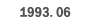
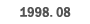
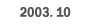
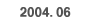
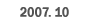
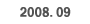

동시 접착 및 TRIMMING 공법
Horizontal Cutting 공법
Selective Cutting 공법

Trunk Liner용 소재 (TLS)
부직포 부착 Scrap 재활용 기술
포장용 소재

거푸집용 소재
Plastic Door용 소재
고강성 저중량 소재 (BAMBOO STOCK)

냄새개선 소재 (“NS” Type)
중공성형 공법

기능성 압출시트(Trunk Liner 소재)
내충격 흡차음 소재
고강성 경량판재 제조 공법

흡음재 일체소재

표피재 일체소재
이미지 자료의 텍스트
원본 도해와 함께 읽을 수 있는 Figma 수록 문구입니다.
한양소재(주)
R&D
자동차부품업계를 선도하는 한양소재의 연구실적입니다.
1988. 09
1990.10
1992.09
1993. 06
1993.11
1998. 05
1998. 08
1999.01
2002. 01
2003. 10
2003. 11
2004. 06
2005. 11
2006. 11
2007.10
2008. 09